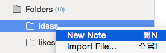
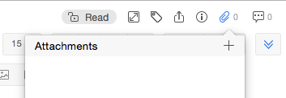
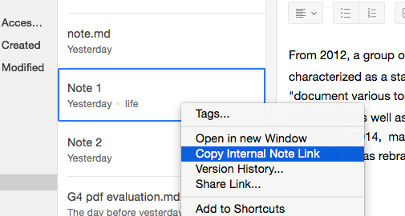
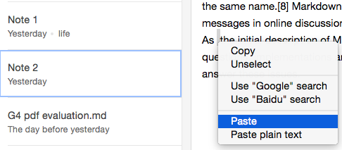
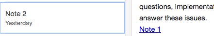

Empty Note
Two ways to create an empty note:
- Right-click one of your folders.
- Click "New Note" on the top bar.
Tips on editing note:
- You can add a Word or PDF file to your note.
- Add an internal link.
- Right-click Note 1 on the center bar and copy its internal link by
clicking "Copy Internal Link".
- Paste it onto Note 2.
- Note 1 is linked to Note 2.
- Right-click Note 1 on the center bar and copy its internal link by
clicking "Copy Internal Link".